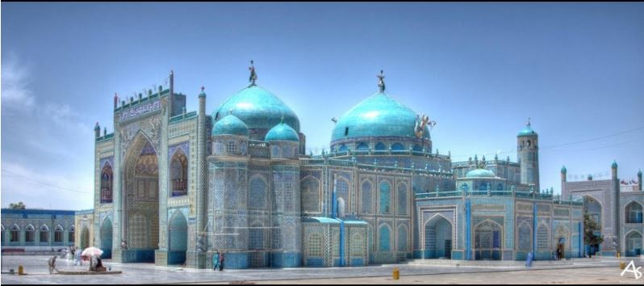

Pages:
Home PageContact Us
Phone: 078-6511516 OR 020-2230066
Email: niaziali.consultancy@gmail.com
Address: Taimany Project/ Opposite to Salim Carvan Plaza,
Street 4,District 4, Kabul, Afghanistan
|
|
|
|  |
Kabul, Afghanistan's capital city, is located in the eastern part of the country and is the largest city in the country. It's two official languages are Dari and Pashto. Kabul's population is around 5 million, and it is the 64th largest country in the world. Kabul is around 3500 years old. A civil war in the 1990s between various rebel groups destroyed much of the city, resulting in many casualties. Since the removal of the Taliban from power in late 2001, the city gradually began rebuilding itself with the assistance of the international community. Despite the many terrorist attacks in the recent years, the city is growing and developing. The city is divided into about 18 districts. It has many historic sites such as the Darul Aman Palace, Paghman Gardens, Taaq-e-Zafar Babur Gardens Mosque, National Museum of Afghanistan and Qargha Reservoir. These important sites of the city attract many visitors and are centre of attraction of the city.

|
Mazar-e-Sharif is the third largest city in Afghanistan. It is the capital of the province Balkh, and has a population of around 600,000. Mazar-e Sharif, along with Herat, Jalalabad in the east and Kandahar in the south, makes Afghanistan an important strategic location in Asia. These type of locations are very important to Afghanistan because of the wars they have had. These were greatly used in battles. Mazar-e-sharif is also in close proximity to Uzbekistan and Tajikistan. The Mazar Sharif Airport like many other airports in afghanistan has been heavily used during th 1980's soviet war. The name "Mazar-e-Sharif means "Noble Shrine" and is a reference to the large, blue tiled sanctuary and mosque in the center of the city know as the Shrine of Hazrat Ali or the Blue Mosque. This beautiful mosque is also the centre for tourist attraction for the city. The people of Mazar-e-Sharif are very generous, welcoming and kind people
Bamyian is a historic city in the centre of Afghanistan with wide mountain ranges and beautiful valleys.
The Budhas of Bamiyan being one of the most famous landmarks of the city, has come to be a beautiful historic and tourist attraction site. This cut out Budha in the central valley of bamyian is one of the largest cut out budha in the world. This landmark marks the strong belief in buddhism back in the 6th and 7th century. The two monuments located on the east and west side of the valley are carved into the mountain. The first of these monuments being 175 feet in height and the second approximately 120 feet. Both budhas seems to have indian culture or some greek cultural origin since they were described to have robes on and have had curly hair carved. They have mostly been bombarded in the recent years due to the wars occuring in Afghanistan and it being a islamic country did not encourage the practice of worshipping the monuments. These budhas were distructed mostly by the taliban forces in 2001 and they justified this act as the sculptures were bound to be destroyed since Afghanistan has been an islamic country for many centuries now. Only a few details of the buddhas remain and rebuilding or reconstruction of it would be nearly imposssible as nearly all the original pictures or portraits of the buddhas have been destroyed.
Herat is one of the most important and attracting cities of Afghanistan. It has a population of around 436,000. It is situated in the fertile valley of Hari River. Herat has a number of attracting sites such as the Herat Citadel the Minaret of Jam and the Mosallah Complex. This important historic sites attract many tourists to the city eveyr year. Herat has been governed by various Afghan rulers since the early 18th century. Herat lies on the ancient trade routes of the Middle East, Central and South Asia. As the gateway to Iran, Herat collects high amount of customs revenue for Afghanistan. The city has an international airport. Herat has a high residential density clustered around the core. Agricultural land is the largest percentage of the total land use.
Herat also grows a lot of crops on its land. Saffron is being cultivated all over the province as a high value crop. Herat is actually very famous for its saffron, and even has many companies such as Herat Saffron TM. Saffron is exported from Herat to many countries around the world.